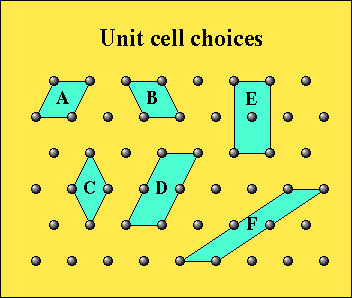

5 - Lecture notes for GEOL3010
Klein 229-238
Nesse 6-18, 111-112
Until this point, we have been concerned with the external form of perfect crystals, using the basic symmetry operations of reflection, inversion, rotation and rotoinversion or other combinations of operations.
By now you should be getting familiar with the Hermann-Mauguin symbols that describe symmetry elements in a crystal form without translation. For example,
It can be shown through trial and error (or it can be proven mathematically) that there are only 32 possible combinations of symmetry operations to completely describe all possible external space filling symmetry properties (recall, this is without translations, glide planes or screw axes). These are the 32 point groups and they make up the 32 crystal classes in the table below.
32 Combinations of symmetry elements |
|||||
| Rotations |
1 |
2 |
3 |
4 |
6 |
| Rotoinversons |
i |
m |
bar-3 |
bar-4 |
bar-6 ( 3/m) |
| Multiple rotation axes |
222 |
32 |
422 |
622 |
|
| Rotation axis with ^ mirror |
2/m |
3/m (bar-6) |
4/m |
6/m |
|
| Rotation axis with // mirrors |
2mm |
3m |
4mm |
6mm |
|
| Rotoinversion with rotation axis and mirror | bar-3 2/m | bar-4 2m | bar-6 2m | ||
| 3 rotation axes and ^ mirrors | 2/m 2/m 2/m | 4/m 2/m 2/m | 6/m 2/m 2/m | ||
| Combinations in isometric system |
23 |
432 |
4/m bar-3 2 /m | ||
|
2/m bar-3 |
bar-4 3m |
||||
These 32 classes have been grouped into six crystal systems with the each group basis being similarities in the degree of symmetry elements.
The 32 crystal classes grouped by symmetry. |
||
|
Crystal system |
Center of symmetry |
No center of symmetry |
| Triclinic |
bar-1 |
1 |
| Monoclinic |
2 / m |
2, m |
| Orthorhombic |
2/m 2/m 2/m |
222, mm2 |
| Tetragonal |
4/m, 4/m 2/m 2/m |
4, bar-4, 422, 4mm, bar-42 m |
| Hexagonal |
bar-3, bar-3 2/m, 6/m, 6/m 2/m 2/m |
3, 32, 3m, 6, bar-6, 622, 6mm, bar-62m |
| Isometric |
2/m bar-3, 4/m bar-3 2 /m |
23, 432, bar-43m |
The physical properties of minerals can sometimes be related back to whether they have a center of symmetry or whether they have enantiomorphism (left or right handed) or polar properties (i.e., no center of symmetry).
One example involves the property of piezoelectricity. If there is no center of symmetry, then sometimes the opposite ends of the crystal structure have different forms. If pressure is exerted at one of the polar ends, then a flow of electrons is started, with negative and positive electrical charges building at the respective ends. The 432 class is the only non-centered class that is non-polar.
The best known example of the piezoelectric effect is the use of quartz to control the frequency of a digital clock.
We now want to make the transition from generating the external form of a crystal (i.e., its habit) to generating the internal arrangement of atoms within the unit cell of a crystal.
Each of the six crystal systems have a set of unique crystallographic axes that are defined by their unit length and the angles at which the axes intersect.
| Crystal System | # independent variables |
Low
s y m m e t r y
High |
Triclinic |
6 - a, b, c, a, b, g | |
Monoclinic |
4 - a, b, c, b | |
Orthorhombic |
3 - a, b, c | |
Tetragonal |
2 - a, b, | |
Hexagonal |
2 - a, c | |
Isometric |
1 - a |
Now instead of using symmetry operations to define the position of crystal faces in space, we want to be able to describe the positions of atoms in space.
In most cases it is convenient to describe the unit cell of in terms of the lattice points located at the corners of parallelepipeds. The shape outlined by the lengths and angles of the axes constitute the unit cell. In these cases, we term the unit cell as primitive (P) with their edges lying along the crystallographic axes.
The dimensions along the axes are given as the unit cell lengths (a, b, c). A common unit of length is the angstrom (Å), where 1 Å = 10-10 m or 10-8 cm. Also, 1 nm = 10-9 m = 10 Å.
1. The edges of the unit cell should coincide with the symmetry axes of the lattice.
2. Chose the smallest possible primitive cell volume (unless a higher symmetry element can be located with a non-primitive cell).
Examples of unit cell choices: 
Sometimes it is desirable to choose a unit cell that is not primitive. It turns out that there are only 14 space lattice types that are compatible with the 32 crystal classes or 32 point groups. These 14 space lattices are made by stacking the five planar lattices in various ways.
Non-primitive unit cells may choose the convention of centering on opposite faces. If only one set of faces are centered, then the lattice type is designated by the axis that is perpendicular to the faces (A-,B- or C-centered).
If all the faces are centered then the lattice is designated as F or all face-centered. In some cases the unit cell can be designated as body-centered (I) (innenzentrierte - Gr. innen = inside, + zentri = center, translated - to produce from the inside center).
A hexagonal unit cell may also be represented by a primitive unit cell or a centered unit cell. A special case of the hexagonal symmetry is the rhombohedral (R) unit cell, outlined by a rhombohedron edges which has equal units lengths (a=b=c) and equal angles (a=b=g ≠ 90°).
| Crystal System | Lattice Type (click on symbol for zoom view) or click on movie file for animation | |
Triclinic |
||
Monoclinic |
C MonoclinicC.mov | |
Orthorhombic |
||
Tetragonal |
||
Hexagonal |
||
Isometric |
F IsometricF.mov | |
Total |
14 |
|
The 14 lattices shown above are known as the 14 Bravais Lattice Types. Note that only C-centered non-primitive cells are indicated. If one chooses an axis other than c as the principle axis (a or b) then the lattice convention is changed and designated as either A-centered or B-centered. The choice of C-centering is a matter of convention, as using A-, B- or C- would still result in the same symmetry elements being present in a given non-primitive lattice.
When the 32 crystal classes are combined with the 14 Bravais lattice types and symmetry operations that include translation (e.g., the elements of a screw axis or glide plane) we form the 230 space groups.
Space groups symbols describe the symmetry elements which relate equivalent points (i.e., atomic sites) in the crystal structure. The capital letter indicates whether the lattice is primitive (P), centered (C), body-centered (I), face-centered (F) or rhombohedral (R).
The remaining part refers to the same elements as the 32 point group symbols.
However, if a translation element is present then it is included. Translations are denoted by glide planes where:
a,b,c when the translation is half the unit cell (i.e., a/2, b/2, c/2)
n if the translation is along half the diagonal (i.e., (a+b)/2, (b+c)/2, (a+c)/2 )
d if a diamond glide plane (i.e., the diagonal divided by (a+b)/4, (b+c)/4, (a+c)/4 ).
Translation in the screw axis will contain a subscript to the rotation axis with its magnitude being some unit fraction of the number of rotations. There are (n-1) possible screw axes for an n-fold rotation axis. The translational component is 1/n.
Face-centered
Sphalerite (ZnS) Isometric Space group F bar-43m
Body centered
Chalcopyrite - CuFeS2 Tetragonal - Space group I bar-4 2d
{kind=link}
{kind=link}
{kind=link}
{kind=link}
{kind=link}
{kind=link}
{kind=link}
{kind=link}
{kind=link}
{kind=link}
{kind=link}
{kind=link}
{kind=link}
{kind=link}
{kind=link}
{kind=link}